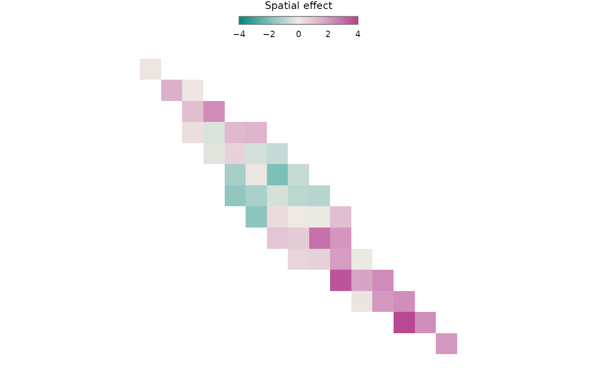

Maps one component of a surface extracted with simulated_surface() over
its prediction grid, by default the mean. plot() of the surface does the
same.
Usage
plot_simulated_surface(
x,
quantity = "mean",
palette = NULL,
limits = NULL,
...
)
# S3 method for class 'RiskMap_simulated_surface'
plot(x, ...)Arguments
- x
The result of
simulated_surface().- quantity
The simulated component to map, one of
"mean"(the default),"linear_predictor","spatial_effect","nugget"and"group_effect", as insimulated_values(). The mean is the prevalence for a binomial model, the mean per unit exposure for a Poisson or negative binomial model and the mean of the response for a Gaussian model. The nugget and the group effect are zero when the model has none.- palette
Colour palette.
NULLselects the defaults ofplot_prediction(), a calm-to-alarm sequential palette for the mean and a palette centred at zero for the linear predictor and the effects. A character vector of colours or the name of an HCL palette accepted bygrDevices::hcl.colors()can be supplied. Prefix a named palette with"-"to reverse it, for example"-Viridis".- limits
NULL(the default) or a numeric vector of two increasing numbers giving the range of the colour scale, for example to map several simulations on a common scale.- ...
For
plot(), the arguments ofplot_simulated_surface(). Forplot_simulated_surface(), arguments passed to the ggplot2 fill scale, for exampletransform = "sqrt"for skewed values. The map setscolours,limits,breaks,labels,oob,na.valueandguideitself. To change them, add another fill scale to the map with+.
Details
The colours and the legend follow plot_prediction(), and the
legend title names the mapped component. A prediction grid that is regular
in the CRS of the model is drawn with tiles, and other prediction locations
as points. The returned object can be modified further with standard
ggplot2 functions.
Examples
data(italy_sim)
example_data <- italy_sim[1:50, ]
fit <- glgpm(y ~ gp(), data = example_data, family = "gaussian",
messages = FALSE)
grid <- create_grid(create_convex_hull(example_data), spacing = 20)
simulation <- simulate_glgpm(fit, nsim = 2, what = c("data", "surface"),
prediction_grid = grid, seed = 1)
surface <- simulated_surface(simulation, simulation = 2)
plot_simulated_surface(surface, quantity = "spatial_effect")

# The same map
plot(surface, quantity = "spatial_effect")